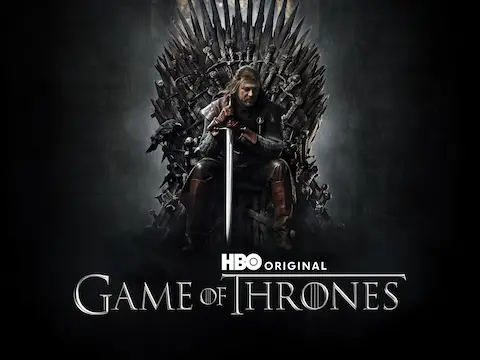

La Danza de Dragones sigue sumando piezas. Westeros.org ha confirmado dos nuevas incorporaciones al elenco de la tercera temporada de House of the Dragon. Barry Sloane, conocido por su trabajo en series como Revenge y Six, da vida a Ser Adrian Redfort, un caballero del Valle cuyo papel en la guerra civil Targaryen está por ver pero que en el libro tiene presencia en los enfrentamientos de la coalición norteña. Tom Cullen, al que muchos recordarán de Knightfall, se mete en la piel de Ser Luthor Largent, un oficial de la Guardia de la Ciudad de desempeño temible que aparece en los capítulos más violentos de Fuego y Sangre.
Estas incorporaciones se suman a las que ya conocíamos: James Norton como Lord Ormund Hightower y Tommy Flanagan como Roderick Dustin, el Roddy el Ruin que lidera a los Lobos del Invierno. El casting sigue apostando por actores de perfil medio-alto con experiencia en ficción épica, lo cual es una señal de que la tercera temporada no va a escatimar en el tratamiento de los personajes secundarios. En la segunda, ese fue uno de los puntos débiles: figuras que en el libro son importantes quedaron reducidas a apariciones casi anecdóticas.
Lo más llamativo de lo que ha trascendido hasta ahora es el comentario del showrunner Ryan Condal sobre un episodio "conceptual" que romperá la estructura habitual de la serie. No ha dado detalles, pero la frase exacta apunta a un capítulo que se aleja del formato tradicional y apuesta por algo más experimental en términos narrativos. La comunidad ya especula: ¿un episodio centrado en un único personaje? ¿Algo en el estilo del "Long Night" de GoT pero bien ejecutado? Sea lo que sea, la expectativa está ahí.
Con estreno confirmado para junio de 2026 y el cast al completo en el CCXP México del 24 al 26 de abril para una presentación con avances exclusivos, la campaña de promoción de la T3 ya está en marcha. La segunda temporada dejó el listón bajo, pero con la guerra completamente desatada y personajes nuevos de peso entrando en escena, hay motivos para el optimismo cauteloso.